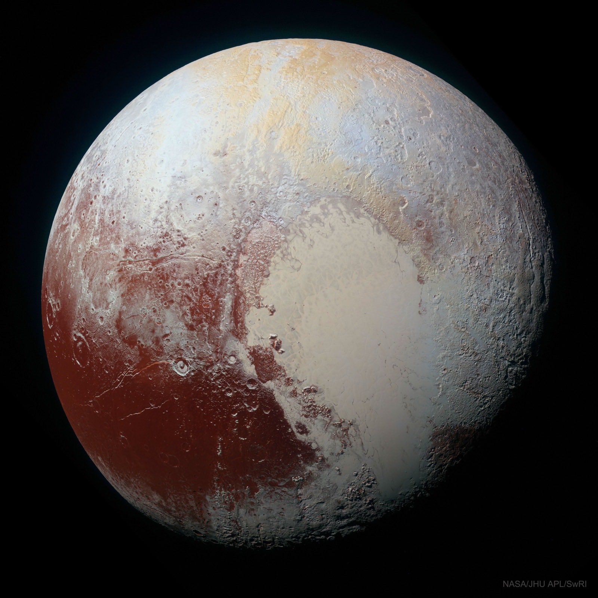
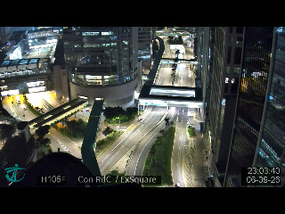
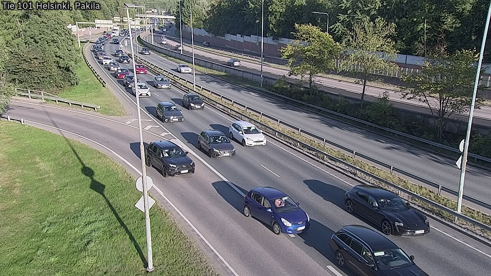
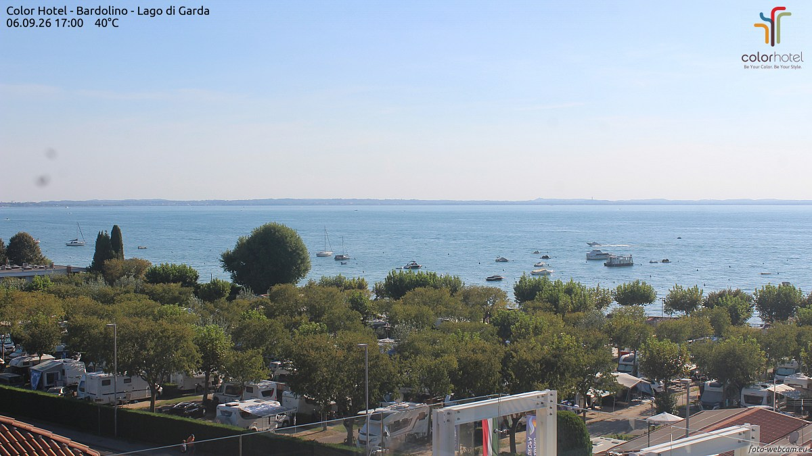
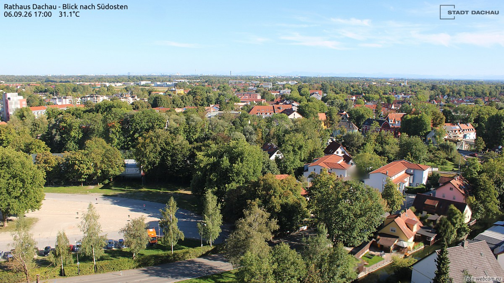
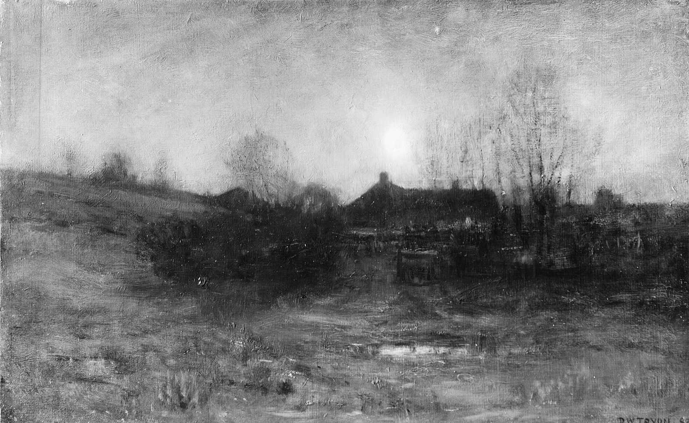
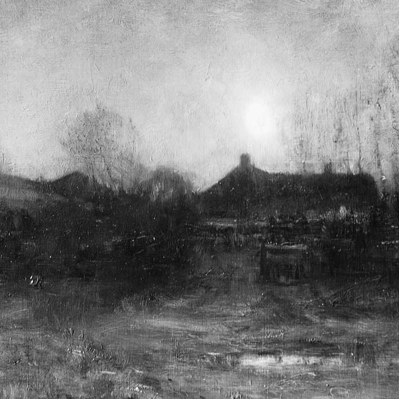

一条只在 23:05 亮灯的巷子，两家馆、一家社，和一份赶在晨雾前付印的小报。

增强色不是给冥王星化妆，而是把化学成分翻译成颜色：奶白的是氮冰，锈红的是被宇宙射线晒老了碳氢化合物，一眼分清。最有名的那颗「心」也看得出是两块地貌拼的——左半边斯普特尼克平原平滑得出奇，像一片结了冰就绝不肯起皱的湖；四周的暗斑与山峦，倒被岁月揉得满是褶皱。
出门对表：今晚残月，月龄约 24.9，亮面只剩两成四，比创刊号那晚又瘦了一圈。11 年前新视野号拍完这张脸，头也不回地飞出了太阳系。它此刻还在往外飞，替所有下夜班的人，先探一探明天。
从候选池抽了五路公开摄像头，截到四路。第五路大加那利今晚三次断流，按规矩弃帧——巧的是，五百三十四年前的今天，哥伦布正是从那串岛扬帆出海的。今晚的失联，就当是历史在打拍子。




香港中环，23:03。人行天桥被灯管描成一线白，路口的车尾灯汇成两条红溪。写字楼黑了大半，亮着的那几格里，不知是谁家的夜班。
赫尔辛基，18:01。太阳斜到几乎与树梢齐平，每根灯杆都在草地上拖出长影；进城方向排起车队，一辆蓝色小车的司机探着头张望。北方的傍晚走得慢，他们的夜班还没到点。
加尔达湖畔巴尔多利诺，17:00。湖面蓝得发亮，帆船东一艘西一艘地歇着；湖滨营地里房车排排坐，树影厚得能拧出阴凉。机位水印写着 40°C——日历翻到了九月，湖还留在七月。
达豪，17:02。红瓦屋顶从市政厅脚下一路铺到天边，绿树把小镇捂得严实，慕尼黑方向只剩一道淡影。水印上写着 31.1°C，南德的夏天赖着不肯走。
9 月 6 日。素材：Wikimedia「On this day」。
今晚从大都会艺术博物馆的开放馆藏里请出一幅：德怀特·威廉·特赖恩（Dwight William Tryon），《月光》（Moonlight），1887 年，木板油画。他是「色调主义」一路的画者，专画安静的夜。

先看整幅：一轮月亮悬在雾蒙蒙的天上，光晕像呵在玻璃上的一口气。农舍与树全沉成剪影，右边一株枯树站在最暗处；前景草甸间几片水洼把月色接住，碎成一片银。整幅画灰得近乎黑白——色调主义的夜里没有鲜艳，只有安静的层次，像深夜电台里一段低音。

再放大看笔触：月亮其实是颜料堆出来的一个柔焦点，边缘全靠「不画」让雾自己漫开；屋顶与树的剪影是薄涂的深色，一笔压一笔；草甸上那几笔厚涂立得起来，水洼的高光像用浅灰点醒的。特赖恩把夜景画成了一次屏息——看画的人不敢出声，怕吹散那层雾。
方法：随机打开一个维基词条，跟着「诶？」走，走满七步。今晚的随机落点：汉朝科技。
第一步。落点是「汉朝科技」，清单很长：冶金、水利、机械、天文、医学……眼睛在「车辆」两个字上停住了，抬脚就走。
第二步。撞上记里鼓车：车分两层，各站一个木人——车每行一里，下层木人击鼓一下；每行十里，上层木人敲镯一次。晋代《古今注》已记下它的制法。两千年前的计程车，按里程打表，用鼓声结算。
第三步。词条开头说它「构造与指南车相似」，于是去看指南车：车顶小人手臂恒指南方。传说把发明权归到黄帝与周公头上，可靠记载里真正造出来的是三国时魏国的马钧。
第四步。诶？一篇古车词条里，冒出了「差速器」这个现代词：汽车转弯时，外侧轮子比内侧多走路，差速器让内外轮各转各的转速。原来越野车的后桥里，坐着一只指南车。
第五步。顺着「内外轮路径不同」走进阿克曼转向几何：转弯时内侧车轮的转向角要比外侧大 2–4 度。1817 年德国匠人伦肯斯佩格提出，专利却归了他的英国代理商阿克曼；而达尔文的祖父伊拉斯谟斯，据说 1758 年就想到了同一件事。
第六步。那就去会一会这位祖父：伊拉斯谟斯·达尔文，一个把演化思想写进诗里的医生。他给组织通电、让死去的肌肉抽搐的实验，越过英吉利海峡，成了日内瓦湖畔一场阴雨夏夜讲鬼故事的原材料。
第七步。1816 年那个夏天，玛丽·雪莱与雪莱、拜伦在湖畔比赛写恐怖故事，写出《科学怪人》——西方第一部科幻小说。冷知识收尾：「弗兰肯斯坦」是那个科学家的名字，怪物自己没有名字。
随机落点在两千年前的汉朝马车，七步走到日内瓦湖畔一个无名的怪物：木人击鼓报里程，怪物无名而降生。来源：中文维基百科「汉朝科技」「记里鼓车」「指南车」「差速器」「阿克曼转向几何」「伊拉斯谟斯·达尔文」「玛丽·雪莱」「科学怪人」。
来源：phys.org space-news RSS。另一条水星探测要闻创刊号刚写过，本期不再重复。
今晚特选：苏轼《记承天寺夜游》（北宋 · 公版）。全文八十五字，写尽一次夜班。
元丰六年十月十二日夜，解衣欲睡，月色入户，欣然起行。
念无与为乐者，遂至承天寺寻张怀民。怀民亦未寝，相与步于中庭。
庭下如积水空明，水中藻、荇交横，盖竹柏影也。
何夜无月？何处无竹柏？但少闲人如吾两人者耳。
露。《月令七十二候集解》：「白露，八月节。秋属金，金色白，阴气渐重，露凝而白也。」今晚正是白露前夜：明天 9 月 7 日入夜后交节，夏与秋在露水上办交接。
字形上看，「露」是雨字头加一个「路」：雨说它从天上来，路说它落回地上去。夜里水汽附上草叶瓦檐凝成珠，天一亮就被收走——像一封只存在一夜的信。从明天起，本刊页脚那场「晨雾」要开始发白了；凌晨下班的人，记得添衣。
出处：《月令七十二候集解》（公版，维基文库核对原文）。交节时刻依天文历算推得，取日不取时。
先揭创刊题的底。上期承诺「答案已锁进编辑部台账」，现在当众开锁——六路数独唯一解如下。
| 4 | 3 | 5 | 2 | 6 | 1 |
| 2 | 6 | 1 | 3 | 5 | 4 |
| 1 | 2 | 4 | 5 | 3 | 6 |
| 3 | 5 | 6 | 1 | 4 | 2 |
| 6 | 1 | 3 | 4 | 2 | 5 |
| 5 | 4 | 2 | 6 | 1 | 3 |
本期题 · 「夜航杂志社刊」数独：在空格填入「夜、航、杂、志、社、刊」六字之一，使每行、每列、每个 2×3 宫内六字各出现一次。答案次夜揭底（已锁进编辑部台账）。
| 夜 | 社 | 志 | |||
| 志 | 杂 | 社 | |||
| 志 | 夜 | 刊 | |||
| 夜 | 刊 | 志 | |||
| 夜 | 社 | 航 | |||
| 航 | 夜 | 刊 |
出题后已用程序回溯验证：唯一解，放心动笔。